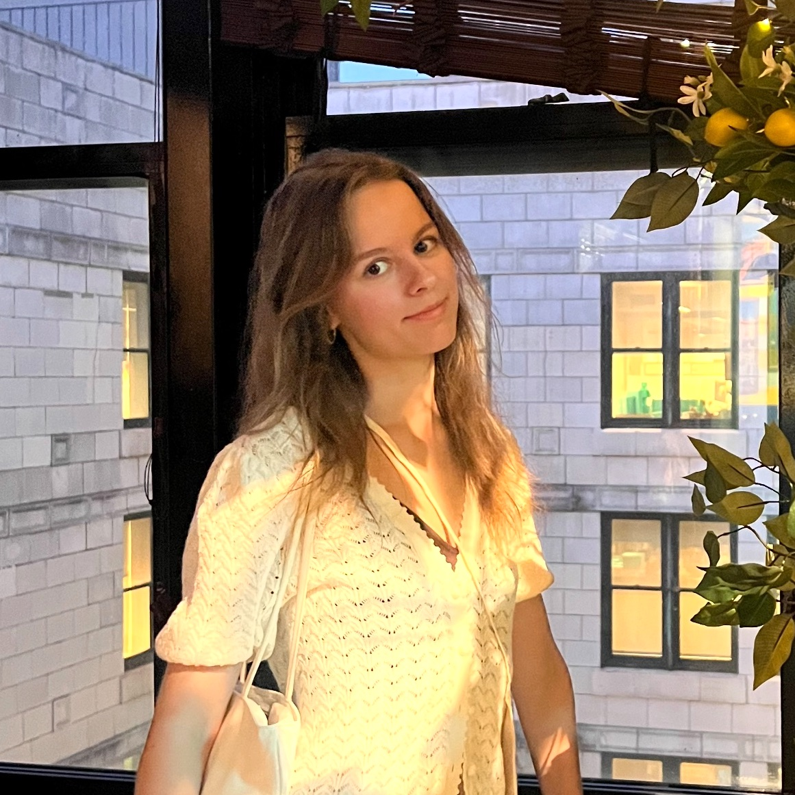
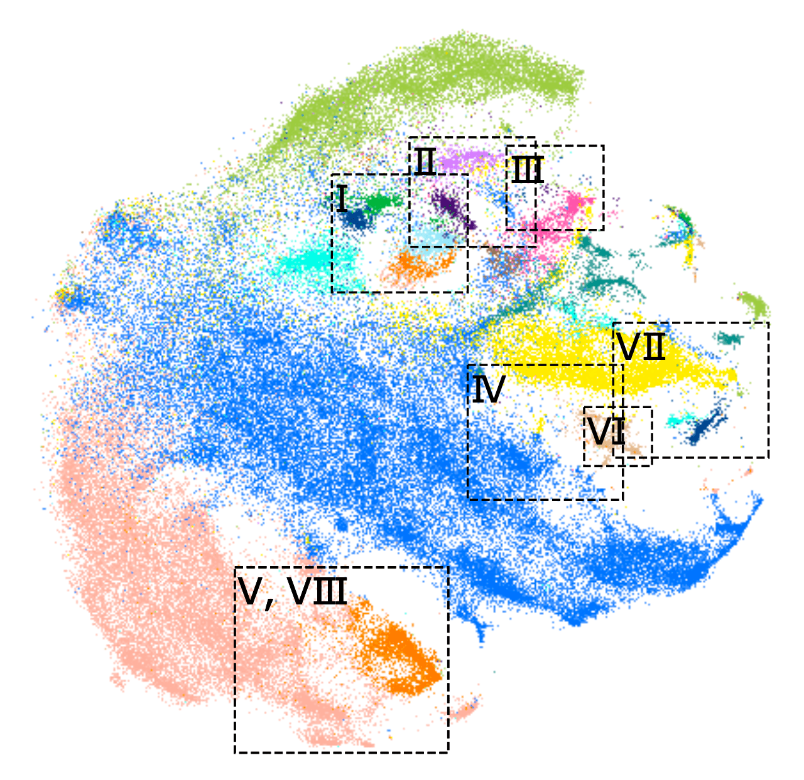
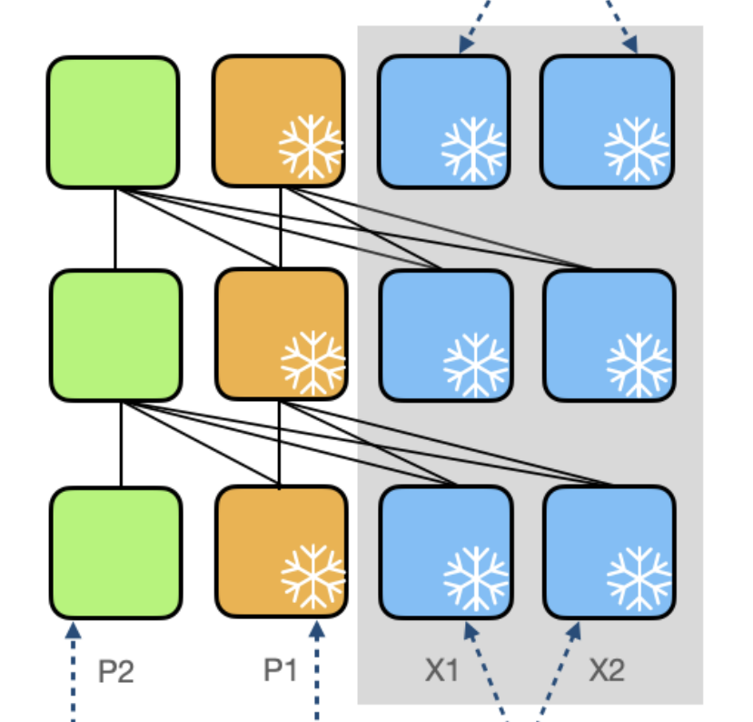
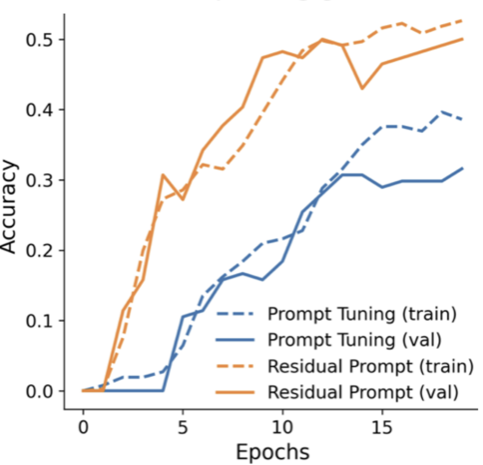
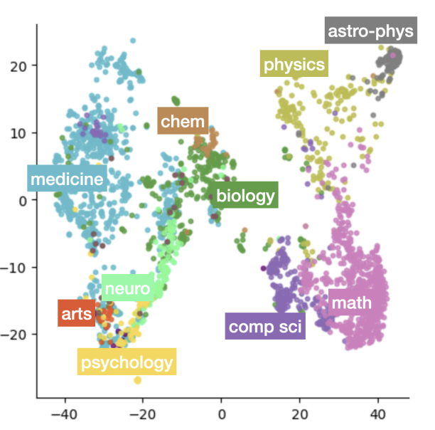
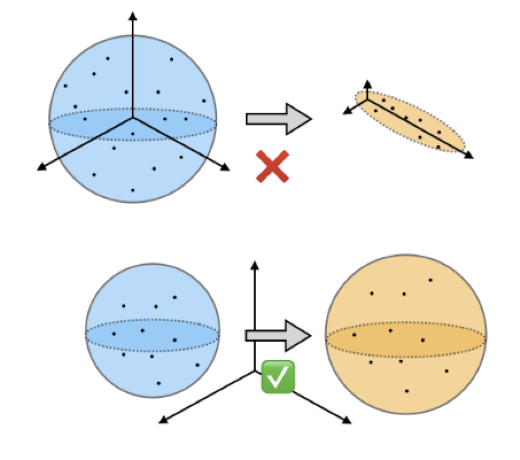
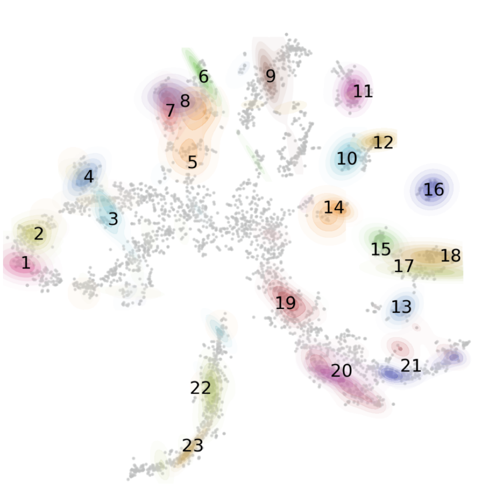
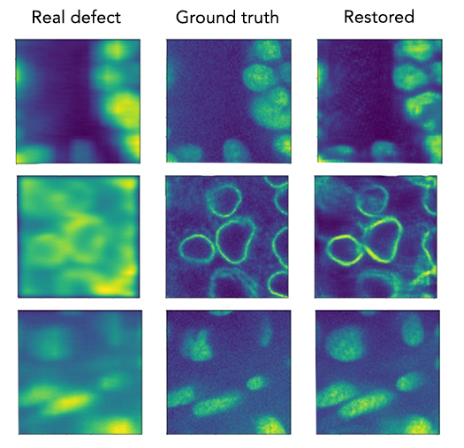
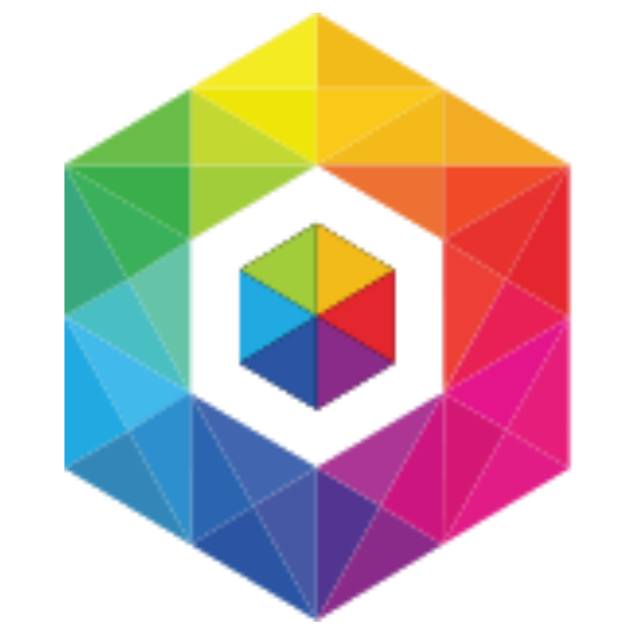

Hi, I'm Anastasia 🇺🇦 🇨🇦! I am a Research Scientist at  Google
DeepMind, working on Gemini post-training, long-horizon agents and
compaction.
Google
DeepMind, working on Gemini post-training, long-horizon agents and
compaction.
Before that, I worked on data curation and pre-training for Muse frontier models at Meta Superintelligence Labs. I received my Ph.D. from the University of Toronto and Vector Institute, where I was fortunate to be advised by Brenda Andrews and Jimmy Ba. More details in my CV.
Before that, I worked on data curation and pre-training for Muse frontier models at Meta Superintelligence Labs. I received my Ph.D. from the University of Toronto and Vector Institute, where I was fortunate to be advised by Brenda Andrews and Jimmy Ba. More details in my CV.
Current work
Currently, I am working on improving the capabilities of Gemini foundation models (such as Gemini Argon / Carbon) at Google DeepMind. My focus is on long-horizon autonomous agents (context and prefix compaction, SFT & RL post-training recipes), adaptive/recurrent architectures, and data selection.Research works
My research focuses on building efficient, adaptable foundation models that generalize across complex real-world tasks:- Long-horizon agents & post-training: context compaction, SFT, and RL for multi-turn reasoning and tool use.
- Efficiency & scalability: adaptive computation, parameter-efficient tuning, and high-signal data curation (Residual Prompts, Progressive Prompts, PIFiA).
- Lifelong learning: continual learning methods that acquire new skills without catastrophic forgetting (Progressive Prompts, Representation Projection Invariance).

PIFiA: self-supervised approach for protein functional annotation from single-cell
imaging data
Nature Methods, 2024

Progressive Prompts: continual learning for language models
ICLR 2023

Residual Prompt Tuning: Improving Prompt Tuning with Residual Reparameterization
ACL 2023, Findings

MIReAD: Simple Method for Learning High-quality Representations from Scientific
Documents
ACL 2023

Representation Projection Invariance Mitigates Representation Collapse
EMNLP 2023, Findings

Learning multi-scale functional representations of proteins from single-cell microscopy
data
ICLR 2022, MLDD


Multi-defect microscopy image restoration under limited data conditions
NeurIPS 2019, Medical Imaging Workshop (Top-15 Submission)
Experience
-
Research Scientist
2026 – Present
Focus: Gemini post-training (SFT & RL), long-horizon autonomous agents, context/prefix compaction, and efficient multimodal architectures -
Meta (GenAI / Meta Superintelligence Labs)
Research Scientist
Sep 2024 – 2026
Focus: Pre-training and mid-training text data research for Muse frontier models (Muse Spark & Muse Wonder)
-
Microsoft Research
Research Intern, NLP
May 2023 – Aug 2023
Team: Subho Mukherjee, Arindam Mitra, Hamid Palangi, Ahmed Awadallah
Project: Improving instruction tuning for LLaMA-based models via hyperparameter optimization and instruction data selection
-
Meta (Facebook) AI
Research Intern, AI Integrity & FAIR
Jun 2022 – Dec 2022
Team: Amjad Almahairi, Mike Lewis, Madian Khabsa, Yuning Mao, Rui Hou
Project: Prompt tuning-based Continual Learning for Language Models
-
Amazon Research
Applied Scientist Intern, AWS
May 2021 – Oct 2021
Team: Vivek Madan, Daniel Khashabi, Ashish Khetan, Vishaal Kapoor, Zohar Karnin
Project: Stabilizing Fine-tuning of Language Models
-

Recursion Pharmaceuticals
Data Science Intern, Computational Drug Discovery
Jun 2020 – Sep 2020
Team: Jes Ford, Berton Earnshaw, Jason Yosinski, Imran Haque
Project: Representation Learning for Drug Discovery
Talks
-
Talk at FAIR: Continual learning for language models without forgetting
-
TorBUG talk: PIFiA, a self-supervised approach for protein functional discovery
-
Discovering gene-disease relationships with Deep Learning
-
Panel discussion: AI in Healthcare and Future
Teaching
I had wonderful opportunities to teach several ML courses at the University of Toronto and Vector Institute:- BAI: Bias in AI, Vector Institute (Winter 2022)
- CSC384: Introduction to Artificial Intelligence, UofT CS (Winter 2021)
- DL2: Deep Learning 2 for Industry Professionals, Vector Institute (Fall 2020)
- CSC311: Introduction to Machine Learning, UofT CS (Fall 2019)
Selected Honors & Awards
- Borealis AI Fellowship (10 finalists across Canada), 2023
- Ontario Graduate Scholarship, 2021–2022
- Vector Institute PGA Fellowship, 2019, 2020, 2021
- University of Toronto Ph.D. Merit Entrance Scholarship, 2018